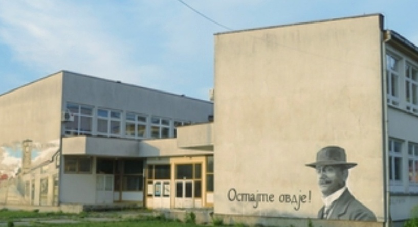
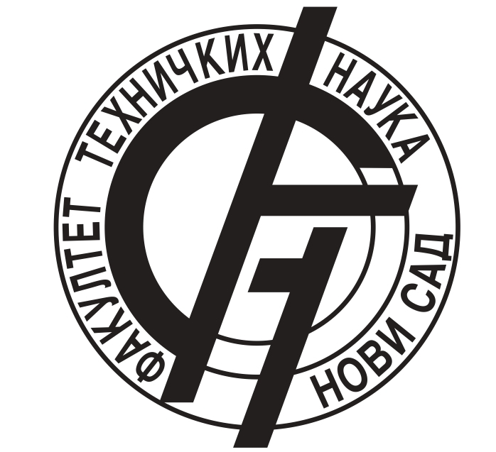
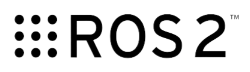
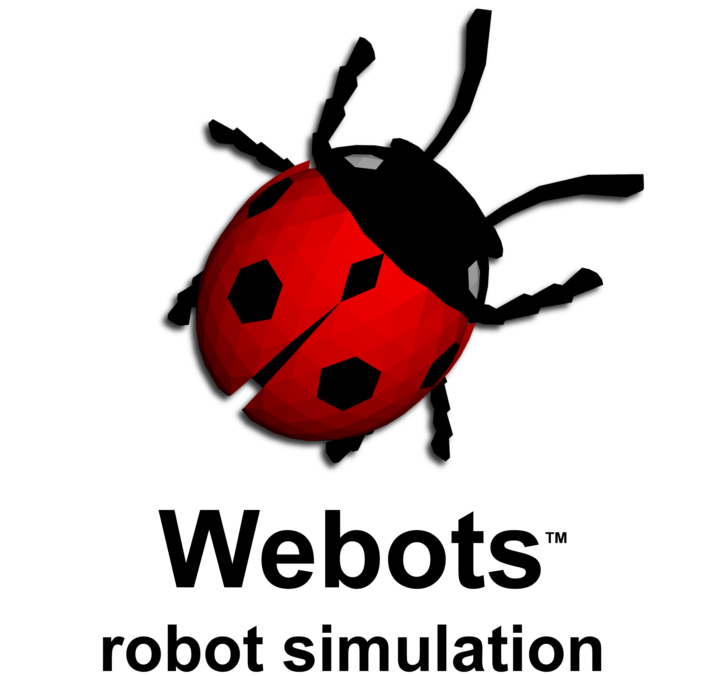
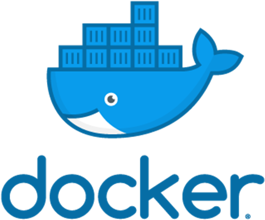
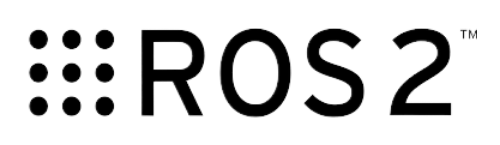
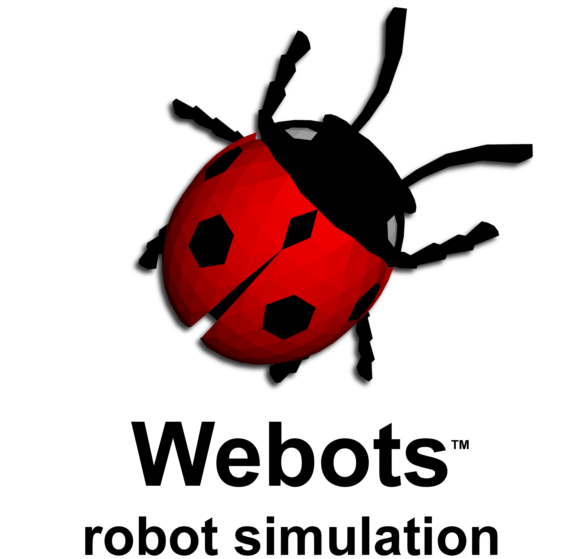
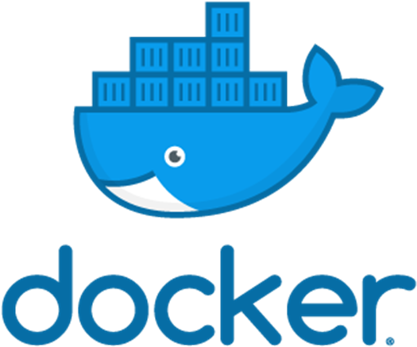

Hi, I'm Marija - programmer and robotics enthusiast.
I create intelligent machines through code and circuits.
Join me on this exciting journey into the world of robotics and programming,
where we build, innovate, and shape the future together.
Education
High school
Gimnazija Aleksa Šantić, Nevesinje (2015-2029)
I have successfully completed my high school education.
I attended General Gymnasium in Nevesinje, where I excelled academically over four years.
During this time, I had the opportunity to learn and explore a variety of subjects.
Faculty - bachelor
Fakultet tehničkih nauka, Novi Sad (2019-2023)
I enrolled in the Faculty of Technical Sciences, majoring in Computing and control Engineering, immediately after completing high school. During my third year, I chose the specialization in Computer Science and Informatics, where we delved deep into web programming, databases, artificial intelligence, and image processing. Through extracurricular activities, I ventured into robotics and image processing, which ignited my passion for these fields. My further interests are now firmly directed towards these areas.
Expirience

Internship
(Jun - Avgust 2022)
I completed an internship at RT-RK in the field of embedded programming. During this experience, I gained knowledge in advanced C programming and had the opportunity to delve deeper into the Linux operating system and its kernel.
Demonstrator
(Mart 2022. - January 2023)
In the summer and winter semesters of 2022, I worked as a demonstrator for the Compiler Construction course. During the winter semester, I also simultaneously taught the Object-Oriented Programming course. During this time, I honed my skills in public speaking and gained valuable experience instructing student groups, emphasizing the significance of learning by teaching others.

Team member
(January - May 2023)
During the Bosch Future Mobility Challenge competition, I worked on autonomous driving solutions, focusing on developing algorithms for lane tracking and traffic sign detection. To achieve this, we utilized an RPi camera and integrated distance sensors and an IMU sensor for autonomy. All these algorithms ran on the PRI4 module. Our efforts resulted in securing a place in the finals, and we traveled to Cluj-Napoca, Romania, to compete. Here, I gained valuable experience working within a team and under pressure. It's worth noting that we primarily worked with Python programming language, further enriching my technical expertise. Notably, our competition included teams from five continents of the world, making it a truly global experience.
Team member
(November 2021. - now)
As a member of the Memstor team, which specializes in the development of autonomous robots, I had the opportunity to become acquainted with ROS2, Behavior Tree, and various robotics tools. This experience enhanced my proficiency in the Python programming language and working with the RPi platform. I've been actively tackling the challenges of teamwork, collaborating with individuals from diverse backgrounds. Lastly, it's worth mentioning that our team participated in multiple editions of the Eurobot international competition held in France. This exposed me to the intricacies of preparing for and competing in a large-scale international event.
Internship
(May 2023. - now)
My internship at Spes Robotics was a continuation of my work at Memristor. During this internship, I focused on training a YOLOv8 model for object detection, which I later applied to visual navigation tasks. Since the developed algorithms needed to run on the Jetson Nano platform, all the necessary tools were neatly organized within Docker containers. Throughout the internship, I gained hands-on experience with Docker, the ROS2 Webots simulator, and Python.
Portfolio


 







Contact
For more information, you can contact me by e-mail
Marija. 😊